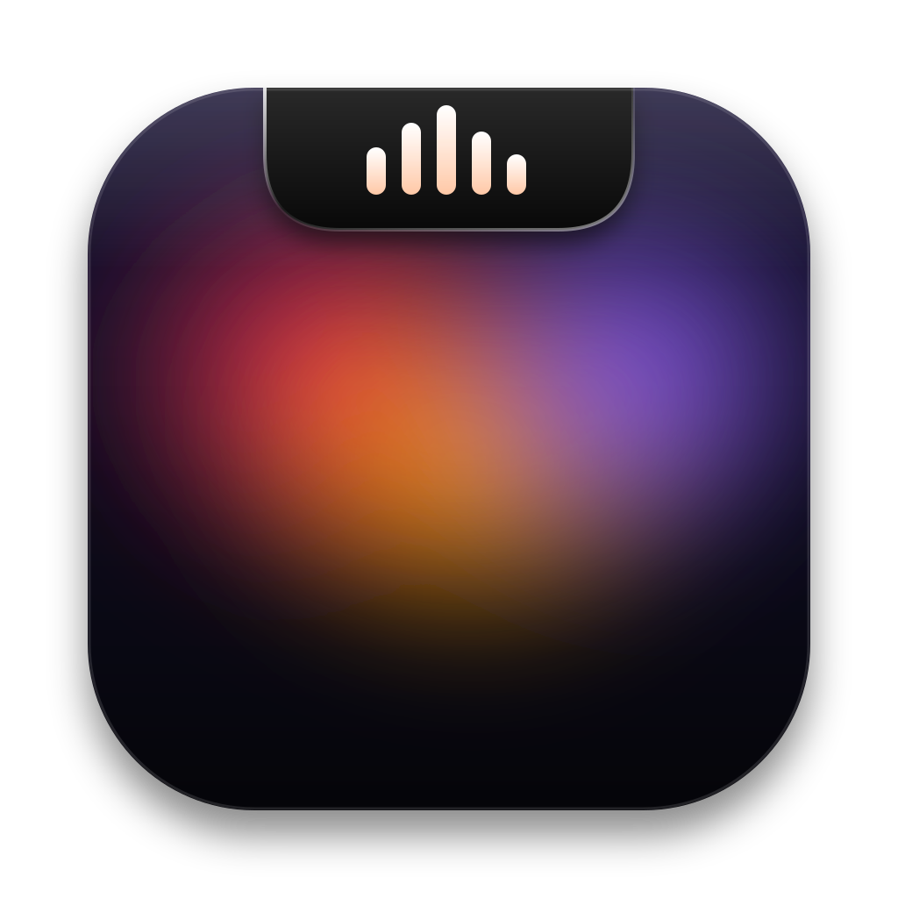

Dynamic Island Music
Tu música, un Pomodoro con el tiempo que quieras, notas que se sincronizan con tu iCloud, un chat con tu IA favorita y más, todo en el notch de tu Mac y en una isla para Windows. Gratis y de código abierto.
Detectando tu sistema…
Instalar en Mac
La forma más fácil: copia este comando, pégalo en la app Terminal y pulsa Intro. Descarga la app, comprueba que no esté alterada, la instala y la abre.
…
¿Prefieres el instalador normal? Descarga el .dmg, arrastra la app a Aplicaciones y, si macOS dice que no puede verificarla (es normal, no está firmada por Apple), ve a Ajustes del Sistema › Privacidad y seguridad › Abrir de todos modos. Solo la primera vez.
Requiere macOS 14 o más nuevo. El Liquid Glass completo necesita macOS 26.
Instalar en Windows
Descarga el instalador y ábrelo. Si Windows muestra "Windows protegió tu PC", pulsa Más información › Ejecutar de todas formas: aparece con las apps nuevas de código abierto hasta que ganan reputación.
O con una línea: pega esto en PowerShell (sin administrador, sin aviso de SmartScreen).
…
También hay un .zip portátil que no instala nada: descomprime y abre.
Requiere Windows 10 u 11 (64 bits). La isla flota arriba y al centro y se ve sobre los juegos a pantalla completa sin bordes.
Qué trae
Música de cualquier app
Spotify, Apple Music, YouTube en el navegador… lo que suene. Los colores del brillo salen de la carátula.
Pomodoro libre
El tiempo que quieras, y suena cuando termina. Se ve también con el notch cerrado.
Notas con iCloud
Archivos de texto en una carpeta de iCloud Drive: se sincronizan solos con tu iPhone y tus otras computadoras.
Chat de IA
Claude, ChatGPT, Gemini u Ollama con tu propia clave. Sin intermediarios.
Todo editable
Arrastra, cambia de tamaño, quita y agrega componentes. Si no caben, pasan a otra página.
Privado
Sin telemetría. Todo se queda en tu equipo.